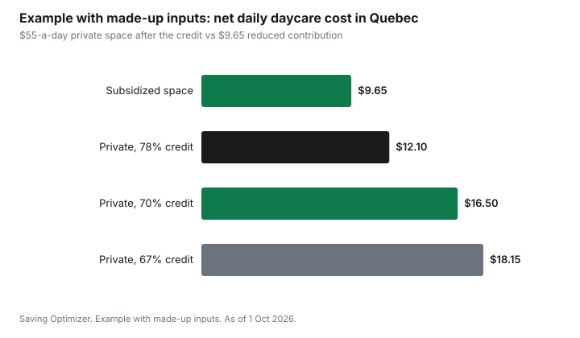

Kids · Canada
Quebec Daycare Costs: Reduced-Contribution Spaces vs Private Daycare and the Tax Credit

In Quebec, a subsidized daycare space costs a reduced contribution of $9.65 a day in 2026, while a non-subsidized (private) daycare sets its own fee and the family gets part of it back through Quebec's refundable tax credit for childcare expenses. For 2026 that credit is worth between 78 and 67 percent of eligible expenses, depending on family income, and it can be paid in advance during the year. A private space can come close to the subsidized cost for a lower-income family and costs noticeably more for a higher-income one. Work out the net daily cost for your income before you accept or decline a space.
Key takeaways
- The reduced contribution for a subsidized space is $9.65 a day in 2026, indexed each 1 January.
- Non-subsidized daycares set their own rates. Quebec's refundable tax credit returns 78 percent of eligible expenses for family income up to $25,305 and 67 percent at $122,290 or more in 2026.
- From the 2026 tax year, the credit's general age limit for an eligible child is under 14, down from 16. Children with an impairment have no age limit.
- You can ask Revenu Québec for advance payments of the credit so the money arrives during the year, not at tax time.
- Example with made-up inputs: a $55-a-day private space nets to about $16.50 a day at a 70 percent credit, against $9.65 for a subsidized space.
Subsidized spaces and the reduced contribution
Subsidized childcare in Quebec includes CPEs (centres de la petite enfance), subsidized daycares and recognized home childcare. Parents in these spaces pay the reduced contribution. Quebec.ca sets it at $9.65 a day for 2026 and says it is indexed every 1 January. Some families on listed assistance programs can be exempt from paying it, for up to 5 days a week and 261 days a year, for a child under five on 30 September.
To be eligible for the reduced contribution, the parent must live in Quebec and hold one of the statuses listed on Quebec.ca, such as Canadian citizen or permanent resident. Places are assigned through the La Place 0-5 waiting list, so register early and keep your file current.
Because the reduced contribution is already low, the Quebec tax credit for childcare expenses does not apply to it. The federal child care expense deduction can still apply to amounts you pay, as Quebec.ca notes.
Non-subsidized daycare and the refundable tax credit
Non-subsidized daycares set their own daily rate, which Quebec.ca describes as generally higher than the reduced contribution. The gap is narrowed by the refundable tax credit for childcare expenses. The credit is your eligible expenses multiplied by a rate set by your family income, meaning your income plus your spouse's.
| Family income more than | Up to and including | Credit rate |
|---|---|---|
| $0 | $25,305 | 78% |
| $25,305 | $44,620 | 75% |
| $44,620 | $46,270 | 74% |
| $46,270 | $47,935 | 73% |
| $47,935 | $49,565 | 72% |
| $49,565 | $51,225 | 71% |
| $51,225 | $122,290 | 70% |
| $122,290 | and over | 67% |
Eligible expenses are capped per child. Revenu Québec's calculation page lists the limits for the 2025 tax year as $12,275 for a child under seven on 31 December, $6,180 for an older eligible child, and $16,800 for a child with a severe and prolonged impairment. Check Revenu Québec for the 2026 limits before you plan around them. From the 2026 tax year, the child must be under 14 at some point in the year, down from 16, except for a child with an impairment.
Advance payments: get the credit during the year
A private daycare fee is paid every month, but a tax credit normally arrives after you file. Revenu Québec lets you apply for advance payments of the credit, so part of it is paid during the year. Keep the RL-24 slip your daycare issues, and file your return so the advance payments are reconciled. If your income rises during the year, the rate can fall, and advances may need to be repaid.
How the federal deduction fits
The federal child care expense deduction is separate. It lowers taxable income for amounts paid for eligible child care, up to $8,000 per child under 7, $5,000 for ages 7 to 16, and $11,000 for a child eligible for the disability tax credit, generally claimed by the lower-income spouse. It applies to both subsidized and non-subsidized fees. The T778 guide covers who claims it.
Example with made-up inputs: net daily cost
These numbers are an example with made-up inputs, not daycare prices. A family with income in the 70 percent band is offered a private space at $55 a day. The credit returns $38.50 a day, leaving $16.50 a day before the federal deduction. A subsidized space would cost $9.65. Over a made-up 260 days, the private space nets about $4,290 and the subsidized space about $2,509, a gap of roughly $1,781 a year. At the 67 percent rate, the private space would net $18.15 a day. Expense caps can also bind: a private fee above the cap is not credited on the excess.
| Option | Daily fee | Credit | Net per day |
|---|---|---|---|
| Subsidized space | $9.65 | Not applicable | $9.65 |
| Private at 78% credit | $55.00 | $42.90 | $12.10 |
| Private at 70% credit | $55.00 | $38.50 | $16.50 |
| Private at 67% credit | $55.00 | $36.85 | $18.15 |

Quebec's Ministère des Finances publishes a childcare cost calculator that combines provincial and federal measures. Use it with your own fee and income before deciding.
Sources
- Quebec.ca, Childcare centres: costs, last updated 3 November 2025, as of 1 Oct 2026. Reduced contribution $9.65 a day for 2026, indexed 1 January; eligibility statuses; payment exemption up to 5 days a week and 261 days a year; non-subsidized rates set by the centre; provincial credit and federal deduction.
- Revenu Québec, Rates for the Tax Credit for Childcare Expenses – 2026, as of 1 Oct 2026. 78 percent up to $25,305 down to 67 percent at $122,290 or more.
- Revenu Québec, Calculating the Tax Credit for Childcare Expenses, as of 1 Oct 2026. 2025 limits $12,275, $6,180 and $16,800.
- Revenu Québec, New Age Limit for the Refundable Tax Credit for Childcare Expenses, 23 September 2025. Under 14 from the 2026 tax year; no age limit for a child with an impairment.
- Income Tax Act, section 63. Federal deduction limits $8,000, $5,000 and $11,000.
- The $55 private fee, 260 days, and the totals in the example table and chart are an example with made-up inputs.
Frequently asked questions
How much does subsidized daycare cost in Quebec in 2026?
Quebec.ca sets the reduced contribution at $9.65 a day for 2026, indexed each 1 January. Some families on listed assistance programs can be exempt for a child under five on 30 September.
How much is Quebec's tax credit for childcare expenses?
For 2026, Revenu Québec's rate is 78 percent of eligible expenses for family income up to $25,305, falling through several bands to 70 percent between $51,225 and $122,290, and 67 percent above $122,290. Eligible expenses are capped per child.
Can I get the Quebec childcare credit before tax time?
Yes. You can apply to Revenu Québec for advance payments of the credit during the year. Keep the RL-24 slip and file your return so the advances are reconciled, since a higher income can lower the rate.
What changed for the Quebec childcare credit in 2026?
From the 2026 tax year, the general age limit for an eligible child is under 14 at some point in the year, down from 16. There is no age limit for a child with a mental or physical impairment.
Is private daycare in Quebec much more expensive than a CPE?
It depends on the fee and your income. After the refundable credit, a lower-income family may pay only a little more per day than the $9.65 reduced contribution, while a higher-income family pays more. Use your actual fee and Quebec's childcare cost calculator.
Researched and drafted with AI assistance and fact-checked against official Canadian sources. How we create content.
Disclosure: No product or provider is recommended or ranked. Saving Optimizer may earn a commission if a partner link is added later; no partnership is claimed. Education only. This is not tax advice; confirm amounts with Revenu Québec.